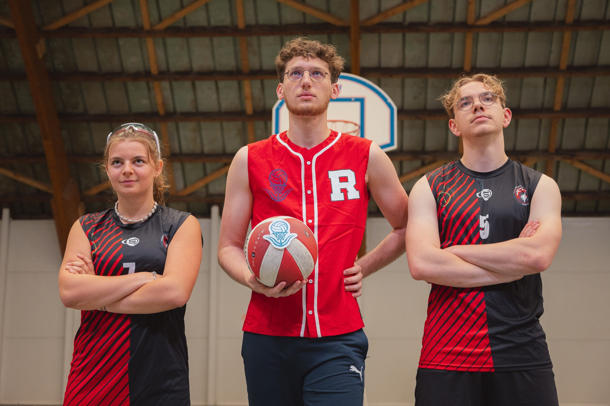

Julien STAN

Responsable technique
"Le BV Ball plus qu'un sport, un spirit" : Marc Michel 2024. Cette citation m'a beaucoup inspiré et c'est ce qui nous a motivés à créer le BV-Ball. Les sports actuels sont juste des sports, nous, nous voulons créer plus qu'un sport. Le BV-Ball est un véritable état d'esprit.
Marie-Sarah GARNIER

CEO
Sportive et entrepreneuse dans l'âme, le BV-Ball est l'une de mes plus belles créations. Voir les gens apprendre de A à Z un nouveau sport, les voir créer des stratégies que je n'aurais jamais imaginées, et modifier le sport tous ensemble est vraiment impressionnant à découvrir.
Etienne MULLER

Responsable marketing
Je m'occupe activement de la gestion de la communication du BV-Ball. Cet aspect est vraiment très important dans la création d'un nouveau sport. Plein de sports sont créés aujourd'hui, mais beaucoup ne dépassent pas l'étape de prototype car la communication sur le sport a été délaissée.
